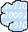
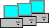

{kind=link}
{kind=link}

Fig 2.2 Network diagram with 3-level hierarchy
Introduction to Lesson 2
2.1 Creating a recursive hierarchy
2.2 Clustering
The network diagram editor from Lesson 1 is a valuable tool for modeling a relatively small network, consisting of a couple of routers and hosts. But as the number of devices represented in the diagram grows larger, the diagram becomes more complex and ultimately loses its usability.
Fortunately, a network with dozens or even hundreds of devices is usually not as homogeneous as a small one. Large networks typically have different sections, where machines are related much more closely to each other than to the rest of the network. Also, there is a good chance that out of all those devices, at least a few will be identical (from a network designer's point of view, anyway), such as a group of similar user PCs in a department.
These observations illustrate two basic ways to conquer complexity. First, there exists a type of natural segmentation that enables us to transform a single diagram into a hierarchy of subdiagrams with varying detail. Second, we can use clustering, or grouping a set of similar objects into a single unit.
Hierarchical decomposition is created by representing the details of a system on subdiagrams, and inserting only a single reference to the subdiagrams in the diagram on the next higher level. For example, if a company has several offices worldwide, each office is represented by an individual subdiagram while the higher-level diagram will only contain one object for each office. If the organization is very big, several intermediate levels (like regional or state-level diagrams) may also be necessary.
Recursion appears if a type of (sub)diagram can accept a similar diagram of the same type. In most situations, this cannot happen; the diagrams, or "container units", are usually bound to certain levels of the hierarchy. A state headquarter, for example, is almost always supervised by a regional center, and not by a branch office or another state headquarter. However, in the less traditional and more logical world of engineers and computer experts, recursion is a key technique for providing extensibility and simplicity. Even if a particular application spans only a few levels, it is useful to design the architecture so that it has practically no limits.
It is easy to construct a hierarchy, but it is not always easy to construct a good one. In a good hierarchy, objects are usually related only to objects in the same container or in adjacent containers; cross-hierarchy links are rare or non-existent. An example of a good hierarchy is a traditional military organization, or a giant oak. Networking, on the other hand, displays numerous semi-hierarchies. Networks tend to have multiple cross connections in order to improve proximity and fault-tolerance, but at most locations the "upstream" and "downstream" directions can still be easily identified.
The problem of semi-hierarchies results from relationships; in this case, the network connections in the networking domain. Suppose we designate a contiguous Ethernet network as a subdiagram. Where should the routers of this network be represented: in the subdiagram, in the higher-level diagram, or in both of them? In other words, do we want to draw the subnet boundaries through routers, networks (subnets), or at the point where these two entities meet each other? Where are the externally accessible connection points (a.k.a. ports) of the subdiagrams?
This "where-to-cut-it-into-pieces" question is often a major problem in creating a hierarchy. A possible heuristic decision could be to place a restriction on the points where the inner and the outer worlds meet, requiring them to be relatively simple atomic entities. Routers with ports are fairly detailed structures in this model. Establishing the boundaries at the networks seems to be the best idea. The following rules are therefore established for the hierarchical modeling paradigm:
|
 Perimeter.bmp |
PerimeterSmall.bmp |
We are done with the metamodel, so interpret and register it. We can now test the new
hierarchical modeling environment. The first NetDiagram is on the top level of the
hierarchy: let's call it "World". Our World consists of the Internet and two
companies which are connected to it. Now we can either manually create the
subdiagrams, or we can "borrow" a non-hierarchical diagram, like the one from
Fig 1.7 of Lesson 1. That diagram was at the root
level, but it can be dragged onto the World diagram to make it a child.
The two child diagrams, CompanyA and CompanyB, need to have at least one perimeter that connects them to the outside world (i.e. the Internet). Internally, these perimeters behave just like normal networks; anything can be connected to them. CompanyA also has a child diagram of its own to contain all its workstations, so that the second-level network diagram is not cluttered by all those PCs. (An alternate approach to this problem will be presented in the next section.)
We are already familiar with the browser window, but it is even more useful now that we are working with hierarchical data. The NetDiagram models, when opened, cannot display the full hierarchy; they can only show two levels at a time (Fig 2.2). The browser window, on the other hand, can display as much (or as little) as we want to see.
Servers, routers and other network devices form the backbone of an IT infrastructure. In addition to these objects, there are typically several workstations. It is important to include the workstations in the diagrams (to be able to calculate network traffic, for example). However, these machines are typically not significant as individuals, but rather as a group of PCs with a common physical location and similar network connectivity. Many infrastructures use dynamic addressing (DHCP), which indicates uniformity, since addresses are randomly distributed within a group.
Using the new hierarchical modeling capabilities, we now have a way to handle this complexity: create a subdiagram, create a Host for each workstation, connect them all to a perimeter, name the diagram something like "BunchOfOrdinaryPCs", and use them as a single unit in the higher-level diagram. This approach (shown in Fig 2.2) is feasible, but has several shortcomings:
Let a new <<Atom>> entity, "WSGroup", represent a cluster of PCs. It will be very similar to Host in the metamodel, except that it has a different icon and different attributes:
|
 WSGroup.bmp |
There is one more thing to consider about WSGroup. Host implements NetInterface; can
we do the same with WSGroup? Fortunately, NetInterface does not have any attributes
of its own (those were attached directly to Host and Port). There is, however, a
slight semantic confusion about NetInterface; so far, it has always represented a
single network interface, but we have not really relied on that representation yet.
Let us redefine (or clarify) the semantics of NetInterface. We now define it to be
"one or several interfaces connecting to the same network". The definition of
NetInterface has been loose enough so far to allow this change. Now, having tweaked
the rules to our advantage, we can make WSGroup a descendant of NetInterface.
We have saved ourselves a lot of extra work, since Connections will now provide connectivity for WSGroups as well. Be sure to indicate that WSGroups are contained by NetDiagrams (and do not forget to include WSGroup in the Connectivity aspect).
Interpret and register the metamodel, and update the networking project through XML. We can now add WSGroups to the diagram. Fig 2.3 shows an example of a small company network with a few servers, two workstation groups, and Internet connectivity.
| << Previous Lesson | Complete List | Next Lesson >> |
{kind=link}